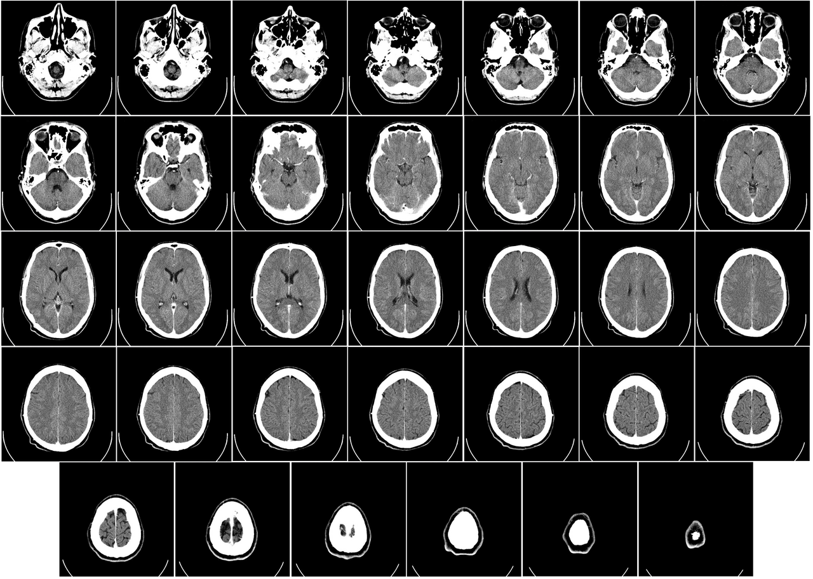

Ficha del catálogo
Tomografía de cráneo simple
- Sistema
- Nervioso
- Modalidad
- TC
- Región
- Cráneo
- Dificultad
- Básico
Estudio de urgencia por excelencia en el traumatismo craneoencefálico y en la sospecha de enfermedad vascular cerebral, porque se realiza en pocos minutos y detecta con gran fiabilidad la sangre aguda, que es lo que cambia la conducta inmediata.
Técnica
Cortes axiales desde el foramen magno hasta el vértex, sin contraste en el contexto agudo. Se revisa siempre con distintas ventanas: Cerebral, ósea y de partes blandas.
Qué observar
- Sangre aguda, que aparece hiperdensa (blanca) por su alto contenido en hemoglobina
- Diferenciación entre sustancia gris y blanca, cuya pérdida es un signo precoz de isquemia
- Línea media centrada, sin desplazamiento por efecto de masa
- Sistema ventricular de tamaño y morfología normales, descartando hidrocefalia
- Cisternas de la base permeables, cuyo borramiento indica edema o herniación
- Ventana ósea para buscar fracturas y ventana de partes blandas para hematomas del cuero cabelludo
- Senos paranasales y celdillas mastoideas, cuya ocupación puede ser signo indirecto de fractura
Hallazgos
Estudio de cráneo con parénquima cerebral de densidad normal, sistema ventricular conservado, línea media centrada y sin colecciones hemorrágicas.
Perlas
Los hematomas se distinguen por su forma: El epidural es biconvexo (en lente) porque está limitado por las suturas, mientras el subdural es cóncavo (en semiluna) y puede extenderse más ampliamente porque cruza las suturas pero no los senos durales.
Diagnóstico diferencial
- Hematoma epidural
- Es una colección hiperdensa biconvexa, limitada por las suturas, que sí puede cruzar la línea media y suele asociarse a fractura del hueso vecino.
- Hematoma subdural
- Adopta forma de semiluna cóncava hacia el cerebro, cruza las suturas pero no los senos durales, y se extiende ampliamente sobre la convexidad.
- Hemorragia subaracnoidea
- La sangre ocupa los surcos y las cisternas de la base dibujando su forma, en lugar de constituir una colección delimitada.
- Infarto cerebral agudo
- Aparece como hipodensidad con pérdida de la diferenciación entre sustancia gris y blanca en un territorio vascular, sin material hiperdenso.
- Hidrocefalia
- Los ventrículos se dilatan de forma desproporcionada respecto a los surcos, con abombamiento de las astas temporales y trasudado periventricular.
- Lesión ocupante de espacio
- Se identifica una masa con edema perilesional y efecto de masa, y su caracterización requiere contraste y resonancia.
Simuladores
- El artefacto de endurecimiento del haz junto al peñasco y a la base craneal crea bandas hipodensas e hiperdensas que simulan lesiones en la fosa posterior.
- Las calcificaciones fisiológicas de los plexos coroideos, de la glándula pineal y de los ganglios basales son hiperdensas y simétricas, y no deben confundirse con sangrado.
- El movimiento del paciente genera duplicación de contornos y bandas que imitan colecciones subdurales finas.
- Un hematoma subdural subagudo puede ser isodenso con el parénquima y pasar desapercibido; se detecta por signos indirectos como el borramiento de los surcos de un lado y el desplazamiento de la unión gris-blanca.
Por modalidad
- TC
- Estudio de elección en la urgencia por su rapidez, disponibilidad y gran fiabilidad para detectar sangre aguda y fracturas.
- RM
- Ofrece mucha mayor sensibilidad para isquemia precoz, lesión axonal difusa, patología de fosa posterior y lesiones no hemorrágicas.
- RX
- Papel muy limitado hoy (conserva utilidad en el control de derivaciones ventriculares y de material implantado).
- US
- Aplicable en el lactante con fontanela abierta, donde permite valorar hemorragia y ventrículos sin radiación.
Protocolo
Se adquieren cortes axiales desde el foramen magno hasta el vértex, con el plano de referencia paralelo a la línea orbitomeatal para reducir la dosis al cristalino y facilitar la comparación entre estudios. En el contexto agudo no se administra contraste, porque lo que se busca es sangre, que ya es espontáneamente hiperdensa. Se emplean cortes más finos en la fosa posterior y se revisa siempre con al menos tres ventanas: La cerebral para el parénquima, una ventana intermedia que facilita detectar colecciones extraaxiales finas, y la ósea para las fracturas, además de la de partes blandas para el cuero cabelludo. Se añade angiotomografía cuando se sospecha aneurisma o lesión vascular.
Clasificación
En el traumatismo craneoencefálico se emplea la escala de coma de Glasgow para graduar la afectación clínica y decidir la indicación del estudio, junto con reglas de decisión que seleccionan qué pacientes requieren tomografía. Los hallazgos se organizan con clasificaciones como la de Marshall, que agrupa los estudios según la presencia de lesiones focales, el estado de las cisternas de la base y la magnitud del desplazamiento de la línea media, con valor pronóstico. Para la hemorragia subaracnoidea se usa la escala de Fisher, que gradúa la cantidad y la distribución de la sangre y estima el riesgo de vasoespasmo.
Errores frecuentes
- Revisar el estudio solo con la ventana cerebral y pasar por alto fracturas o hematomas subdurales finos adyacentes a la tabla interna.
- No reconocer un hematoma subdural isodenso en fase subaguda por buscar únicamente colecciones hiperdensas.
- Considerar que una tomografía normal descarta lesión, cuando la isquemia precoz y la lesión axonal difusa pueden no verse.
- Olvidar la revisión de los senos paranasales, las mastoides y la unión craneocervical, donde hay signos indirectos importantes.

tomografia craneo cerebro urgencia trauma normal ventanas